荧 · 空攻与蹲攻返修
空轻、空重、蹲轻、蹲重16张独立源图按已选母版固定源单位拟合。其余帧与渲染、输入、派蒙贴底、规则均保持。新造型待验。
airLight_0 · 母版／旧稿／新稿
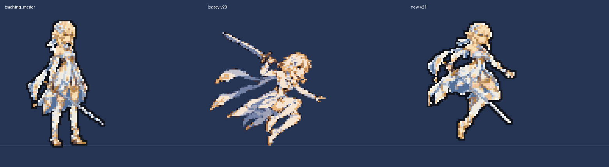
airLight_1 · 母版／旧稿／新稿
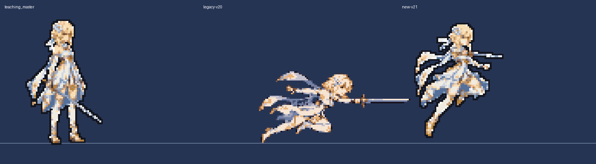
airLight_2 · 母版／旧稿／新稿
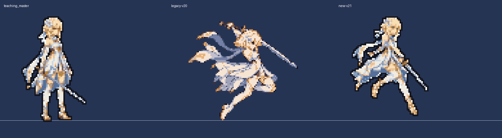
airLight_3 · 母版／旧稿／新稿
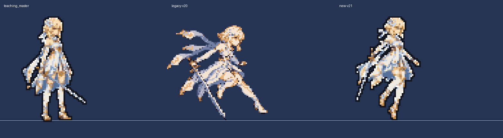
airHeavy_0 · 母版／旧稿／新稿
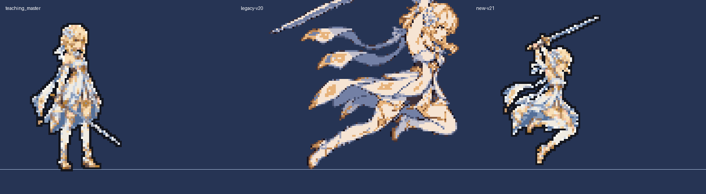
airHeavy_1 · 母版／旧稿／新稿
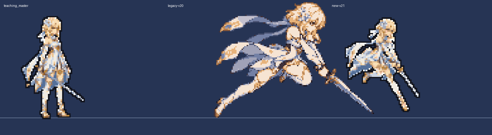
airHeavy_2 · 母版／旧稿／新稿
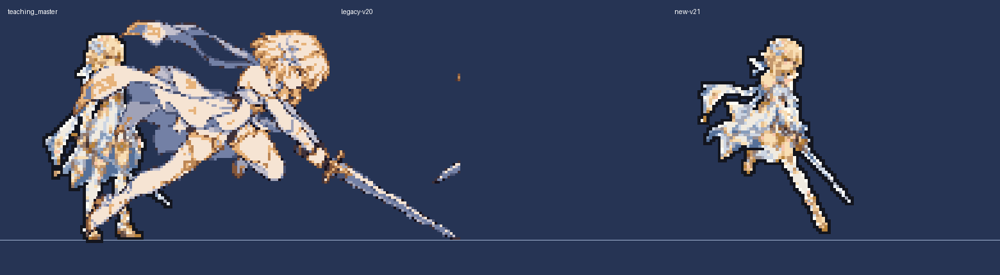
airHeavy_3 · 母版／旧稿／新稿
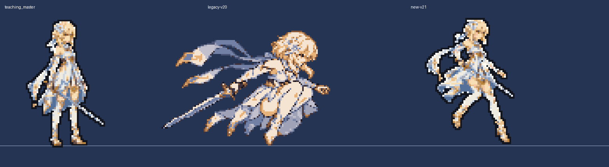
crouchLight_0 · 母版／旧稿／新稿
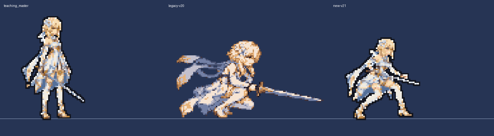
crouchLight_1 · 母版／旧稿／新稿
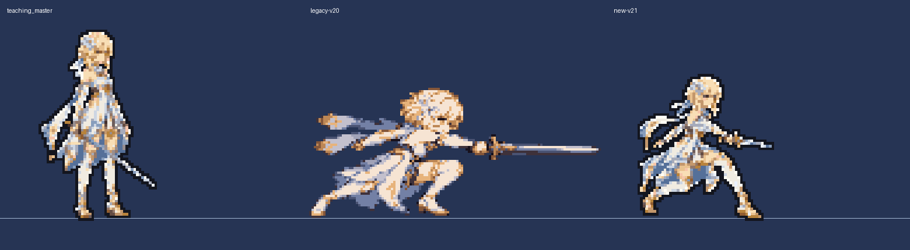
crouchLight_2 · 母版／旧稿／新稿
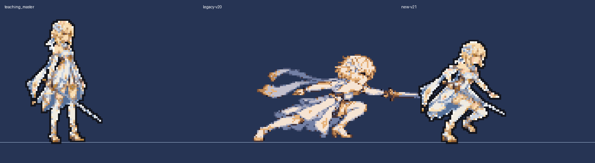
crouchLight_3 · 母版／旧稿／新稿
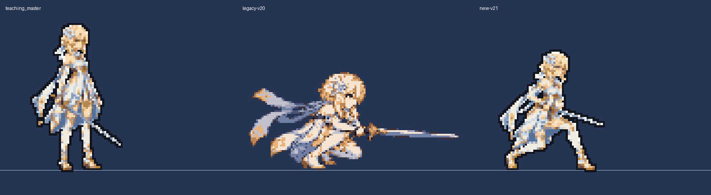
crouchHeavy_0 · 母版／旧稿／新稿
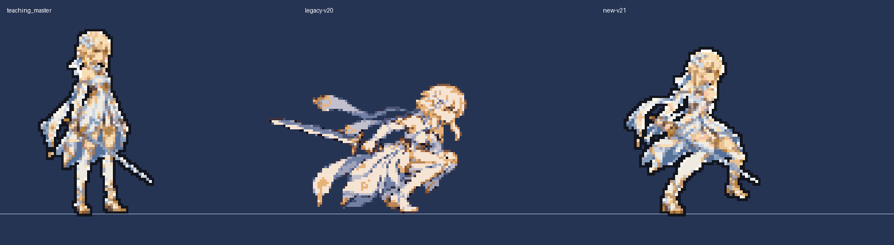
crouchHeavy_1 · 母版／旧稿／新稿
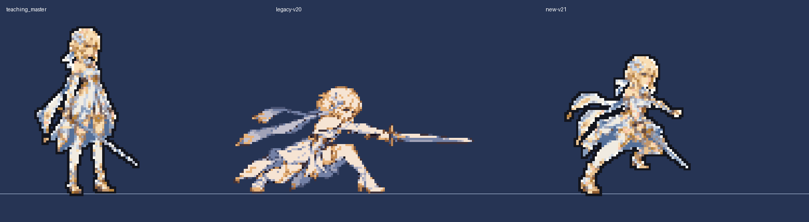
crouchHeavy_2 · 母版／旧稿／新稿
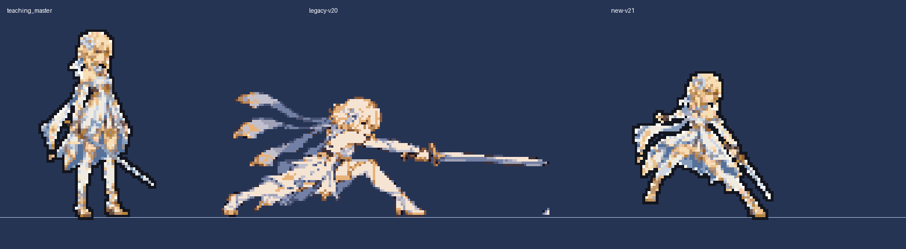
crouchHeavy_3 · 母版／旧稿／新稿
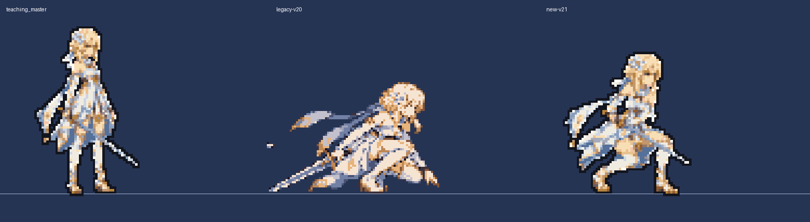
留档：提示词 · 拟合与保留项